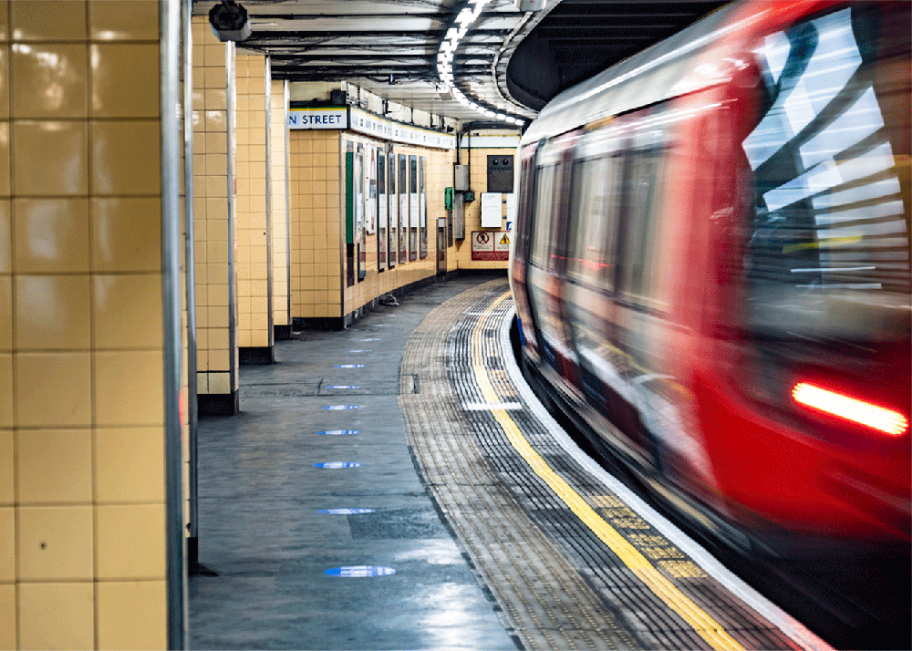
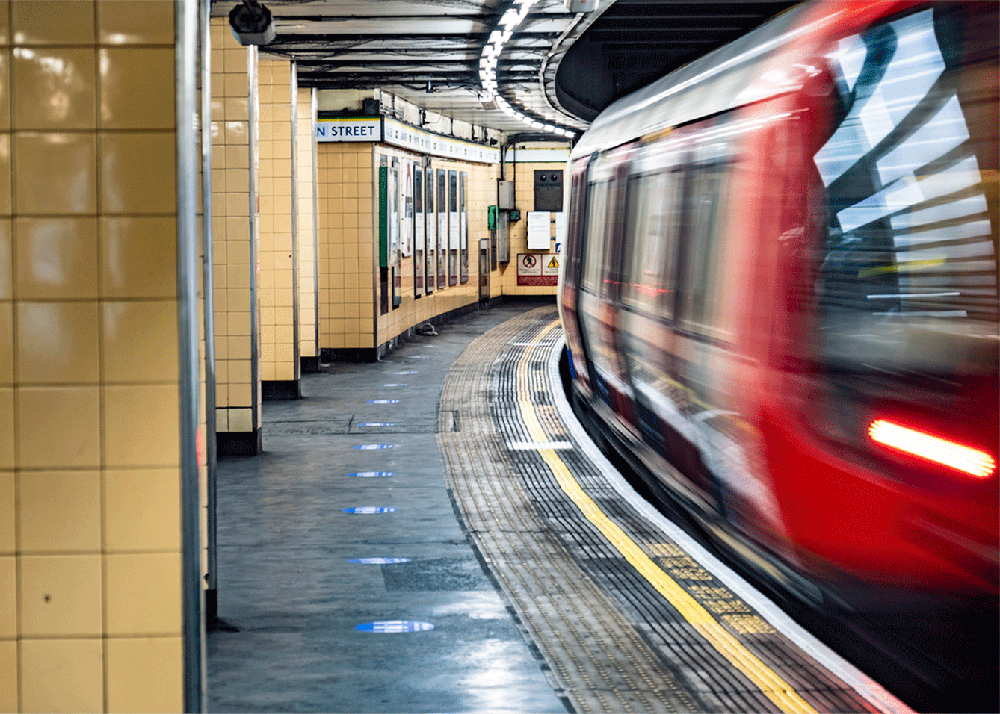

Train and Station Superlatives
| Longest Direct Route | The Central Line: Epping to East Ruislip (34.11 miles) |
| Highest Station Above Sea Level | Amersham: 482 Feet |
| Busiest Station | Waterloo: 100.3 Million Passengers per Year |
| Station with the Most Platforms | Baker Street: 10 |
| Station with the Most Escalators | Waterloo: 23 |
| Station with the Longest Escalator | Angel: 197 Feet |
| Station with the Shortest Escalator | Stratford: 13 Feet |
 
